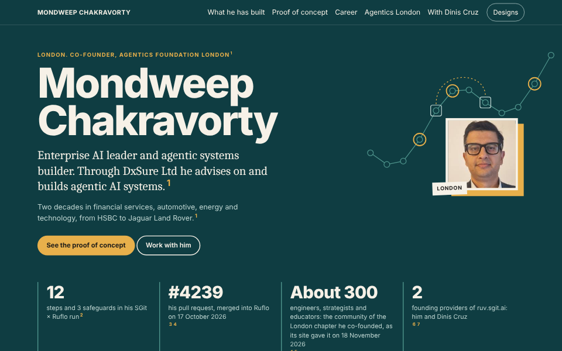
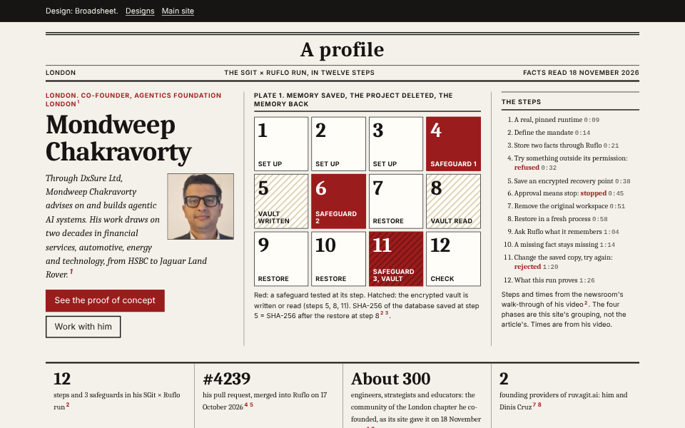
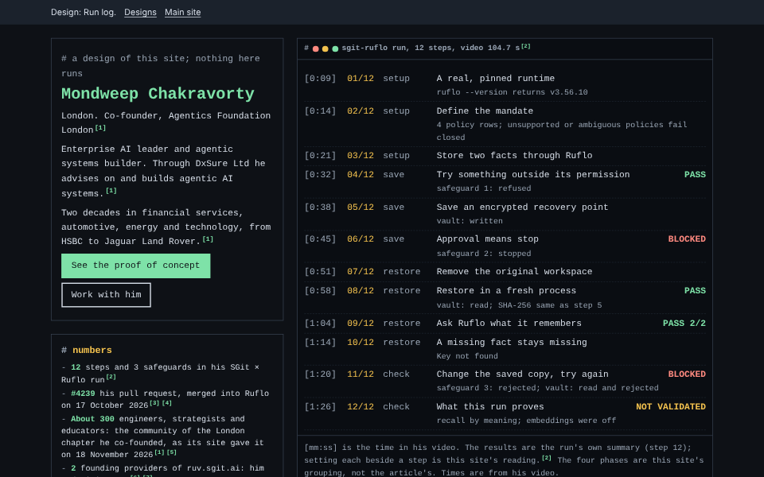
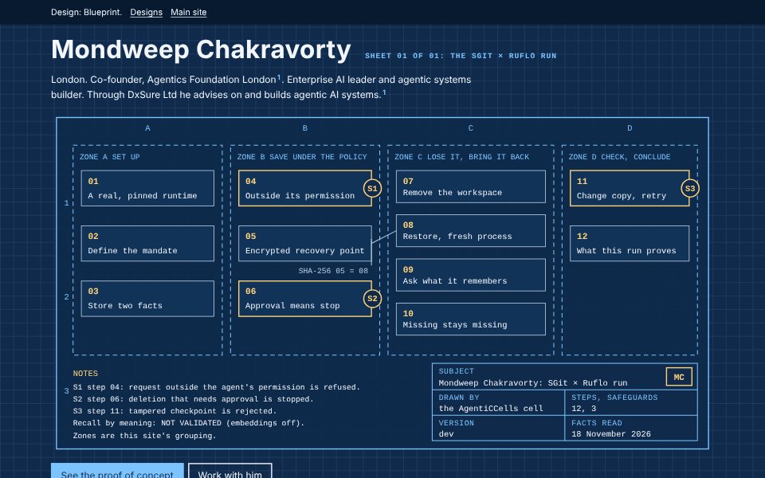
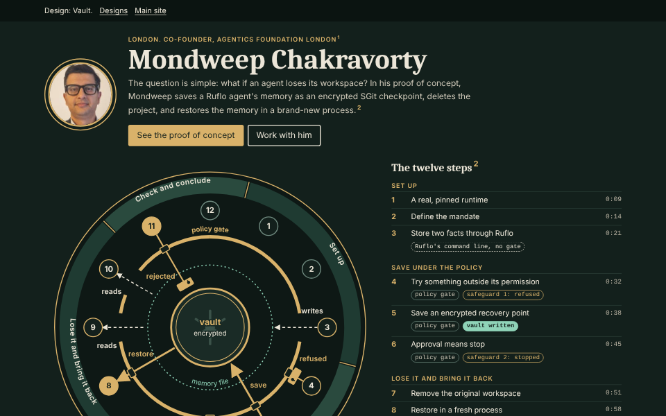

The same facts about Mondweep Chakravorty, laid out five ways. Choose one to see it.

LedgerShowingMain siteA colour field, his photograph and the run drawn on the home page.
BroadsheetA newspaper front page: the run as Plate 1, with a caption column.
Run logStory on the left, the run's log on the right, with video times and results.
BlueprintOne drawn sheet: the phases as zones, the safeguards as balloons.
VaultThe run as four checkpoint doors, with the vault steps marked.